← 返回阅读库 · 原论文目录
论文讲解阅读文档 · 多模态语言模型 · v022
VIOLET : End-to-End Video-Language Transformers with Masked Visual-token Modeling
视频时长 00:09:08；讲解文字 4,452 字符；提取讲解画面 35 张。按视频原顺序阅读，每段文字保留时间戳。
文字来自整段视频的自动语音转写，按自然停顿分段，并与 PPT / 论文页面 / 演示画面对齐。未将讲解压缩为摘要；术语、数字和口述公式请结合画面及原论文核对。 阅读稿已校正规范部分明确术语误识别；原始逐字稿和每处修改记录另行保留。
讲解画面为源视频截图（640×360），不是可编辑 PPT 文件。全片按每秒 2 帧扫描内容变化，逐步展开页保留；连续动画保留代表画面。清晰度受源视频限制。
下载完整资料包 · 含离线 HTML、PDF、Word、全部 PPT 画面和字幕。
原论文与材料
VIOLET : End-to-End Video-Language Transformers with Masked Visual-token Modeling · 下载完整 PDF（19 页）
按时间阅读
00:00:00–00:00:23 · 画面 001
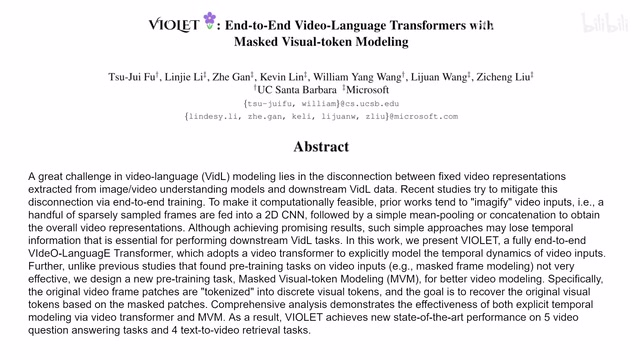
00:00:00–00:00:23 · 画面 001大家好啊今天我们来介绍一个自动笔记人偶 violet end-to-end video language transformers with masked visual token modeling 那么这篇论文呢主要就是把我们的这个 mask 这个 bert 这些东西套到这个 video 和 language 共同的训练的这么一个模型上同时呢大量灵活的运用了不同的 transformers 那么整个这个模型的运作的流程呢就是我首先做这个 pretrain
00:00:23–00:00:39 · 画面 002
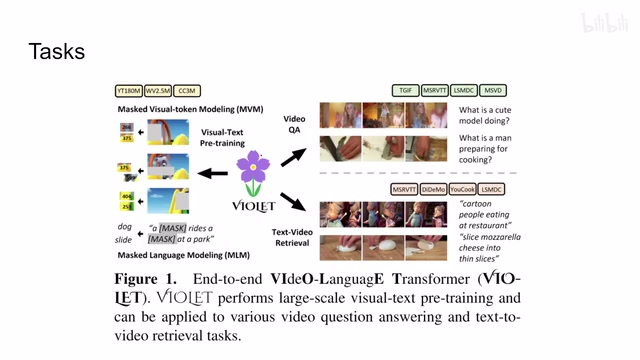
00:00:23–00:00:39 · 画面 002回讯的过程中，我会有这个 video 进来，我把它 mask 掉做这个 prediction，然后我会有这个 text language 进来，也是 mask 掉做 prediction。把这些拿到一起做回讯之后，我们得到了这个 encoder，用来做两个下游任务，一个是这个 video 的 question and answer，就是我通过输入一个问题，然后观看这个视频，那么现在请这个模型根据视频的内容来回答我这个输入的问题。
00:00:39–00:00:40 · 画面 003
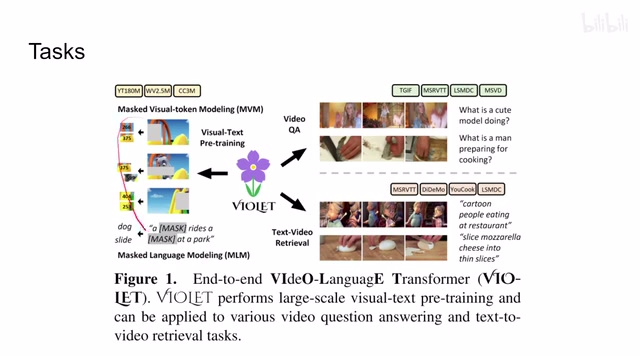
00:00:39–00:00:40 · 画面 00300:00:40–00:01:18 · 画面 004
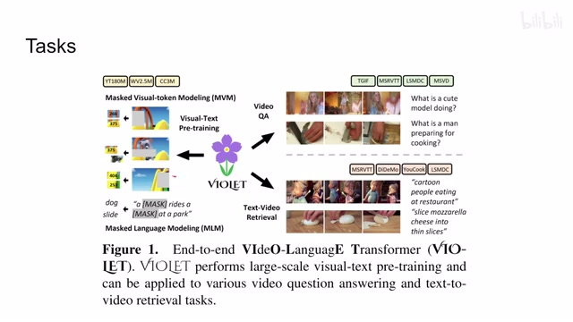
00:00:40–00:01:18 · 画面 004那么第二个任务呢，就是这个 text-video retrieval，就是我现在有一个视频库，然后呢，我现在输入一句话，然后呢，我想通过这一句话把我想要的那一个视频给它找出来。那么这个呢，是两个下游任务。那么下面呢，我们就来看本文提出的这个 VIOLET 它的这个框架是什么样子。那么来到这里，就是本文的这个核心的这个网络的结构。那么我们可以看到呢，
00:01:18–00:01:25 · 画面 005
00:01:18–00:01:25 · 画面 005本文乍一看这个模型很复杂，但实际上找到它的输入是一个 video 加上一个 language。那么看到它下面的演示你也知道了，它们都是各自做了 mask，然后 mask 之后经过上面各种复杂的网络结构出来，我们还是需要预测这些被 mask 掉的这些 token 它原来是什么。这里用离散的 vae 给我们这个 token 来提供一个 supervision。
00:01:25–00:01:26 · 画面 006
00:01:25–00:01:26 · 画面 00600:01:26–00:01:45 · 画面 007
00:01:26–00:01:45 · 画面 00700:01:45–00:01:46 · 画面 008
00:01:45–00:01:46 · 画面 00800:01:46–00:01:56 · 画面 009
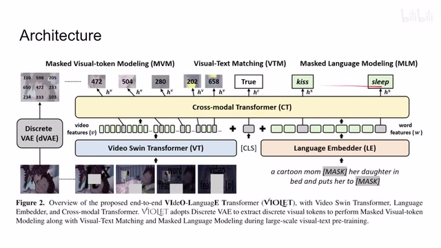
00:01:46–00:01:56 · 画面 009那么这样子呢我们的重建呢就有了目标那么左边这一块呢叫做这个 mask visual token modelingmvm 他的这个 video 的 backbone 呢是这个 Swin Transformer 那这个我们都介绍过了那么再看到右边呢这个是 mask language modeling 他呢就是把我们的这一句话同样的也是 mask 掉一些的单词然后呢送到这个 language embedder 里面得到一些 token 最后呢我们再用来预测这些被 mask 掉的这个单词是什么
00:01:56–00:01:59 · 画面 010
00:01:56–00:01:59 · 画面 01000:01:59–00:02:06 · 画面 011
00:01:59–00:02:06 · 画面 01100:02:06–00:02:07 · 画面 012
00:02:06–00:02:07 · 画面 01200:02:07–00:02:19 · 画面 013
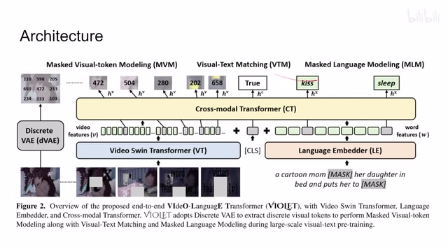
00:02:07–00:02:19 · 画面 01300:02:19–00:02:21 · 画面 014
00:02:19–00:02:21 · 画面 01400:02:21–00:02:23 · 画面 015
00:02:21–00:02:23 · 画面 015这个呢就是 bert 的这些东西那么本文的核心的贡献呢在于他中间多了一个 cross-modal transformer 就是很直接的把这个视频这个 token 和这个语言这个 token 还放到一起来大家一起做这个 transformer 一起做 attention 这些东西那么在此之外呢我们还有一个额外的任务就是这个 visual text matching 你可以看到呢在我们得到这个 visual token 和这个 language token 之后呢我们就加了一个 classification token 那么这个 token 呢他得到 feature 呢用来判断
00:02:23–00:02:27 · 画面 016
00:02:23–00:02:27 · 画面 01600:02:27–00:02:28 · 画面 017
00:02:27–00:02:28 · 画面 01700:02:28–00:02:53 · 画面 018
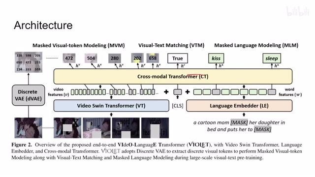
00:02:28–00:02:53 · 画面 018说我们输入的这个视频和我们的输入的这句话，他们是不是相互匹配的。这个也是在这个 self-supervised learning 里面常见的这种这个 multi modality 之间这个做 contrastive 这样这种 loss 的这种操作。那么以上呢，就是本文的整个的这个框架。我们继续来看实现的细节，首先是在我们拿到这个 video token 和这个 language token 之后呢，这里呢施加了两种不同的这个 position embedding。
00:02:53–00:02:57 · 画面 019
00:02:53–00:02:57 · 画面 01900:02:57–00:03:05 · 画面 020
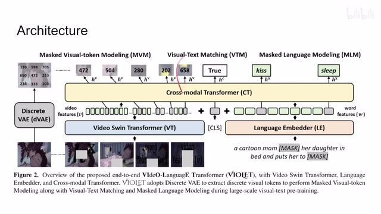
00:02:57–00:03:05 · 画面 02000:03:05–00:03:06 · 画面 021
00:03:05–00:03:06 · 画面 02100:03:06–00:03:08 · 画面 022
00:03:06–00:03:08 · 画面 02200:03:08–00:04:56 · 画面 023
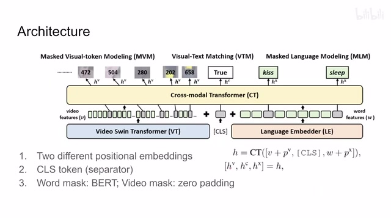
00:03:08–00:04:56 · 画面 023那对于这个 video 来说呢，你的 position embedding 这个 pv 呢就可以沿用这个 Swin Transformer 他使用的这个 positional encoding 这个没问题。那么对于这个 language 来说呢，我们有另一套的这个 positional encoding 这个 px 啊，一起你看到了这里呢，我们把它们直接加起来，然后呢再把我们的这个 classification token 放在这里。那放在这里呢，他不仅就是一个 classification token，同时呢他还把这个视频和这个语言
两串这个 token 呢给它划分开。虽然在 transformer 里面这个顺序并没有什么用啊，特别是你前后用了两种不同的这个 positional embedding 的情况下，但是呢放在这里好看啊。那么对于这个 mask 来说呢，我们这个 word 的 mask 呢，这个 language 的 mask 呢跟这个 bert 是一样的。而对于这个 video 的 mask 来说呢，它跟我们之前呢介绍的有些不同。这里呢作者直接使用的是把这个 mask 的这个 token 呢，这个 cube 呢给它全部用换成 0 来替代
那这样你看整个这个模型就是 video 的 token ，classification tokenlanguage 的 token 对吧，放到一起串起来，放到这个 cross modality 这个 transformer 里面，得到了这么一长串这个 h 这些东西。那么这个 h 呢，关于这个 video 的 token 呢，也是去预测这个 patch 的 feature 的这个 id，就是跟这个 base 这些东西一样的，去预测这个离散的这个 vae 它的这个 hatch 的这个 id。然后这个 classification token 呢对吧，就是一个分类的问题
那么最后呢，这个 language 这个 word 这个 token 呢，还是去预测去重建我们的这个被 mask 的单词是什么。那么既然我们这三个任务都已经确定了，那么很显然的这个 loss 呢也就非常容易设计了。那这里呢就是 cross entropy 乘 3 对吧，三个都是 cross entropy loss。那具体我们来看这个 language，首先最简单的对吧，这个 feature 出来，fully connected layer 出来啊，然后呢一个 cross entropy，因为每一个单词呢你可以把它视为一个类
00:04:56–00:05:54 · 画面 024
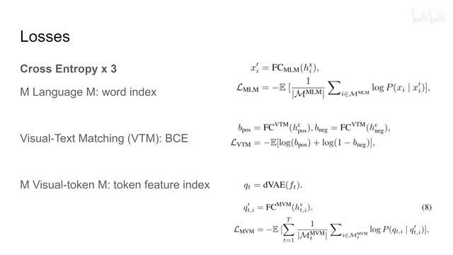
00:04:56–00:05:54 · 画面 024那么你对这个 mask 这个单词呢做它做预测，相当于做一个多分类的问题，那把它分的正确的类就可以了啊。这个看着很唬人啊，啊，只有一个 log 什么这些东西八七八糟的啊，别忘了它一个希望呢对吧，本质呢它是一个 cross entropy。再往下这个 visual text matching 这个二分类的问题了，这个 video 和这个 text它是同一个东西出来的，要么就不是这个 v6 和这个 test 描述的不是同一个东西对吧，二分类的问题。那么再往下这个 visualtoken 呢，其实它跟这个 language 是一样的，因为我们用的是这个离散的 vae，离散的 vae 正如我们之前介绍的对吧，每一个 token 呢它其实对应了字典中的一个 feature，那我只需要预测出这个 feature 的 index 就可以了。那本质上它也是个多分类的问题，所以一样的 cross entropy 来做处理就好
00:05:54–00:05:55 · 画面 025
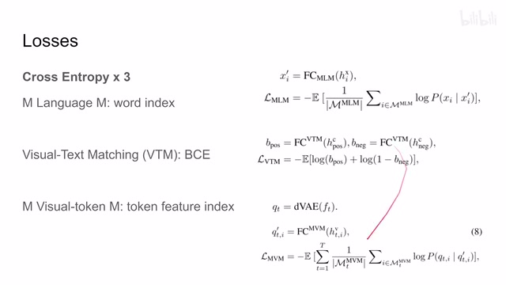
00:05:54–00:05:55 · 画面 02500:05:55–00:06:08 · 画面 026
00:05:55–00:06:08 · 画面 026这块如果你不熟悉的话可以看我们之前的 BEVT，甚至你再翻翻 BEIT 这些东西都是一样的。那么以上就是本文主要的技术贡献了。那么在看结果之前我们还有一个事情要确认就是 masking，我应该怎么样 mask 去我的输入。首先最经典的 blockwise masking，我每次选一个块它是有
00:06:08–00:06:09 · 画面 027
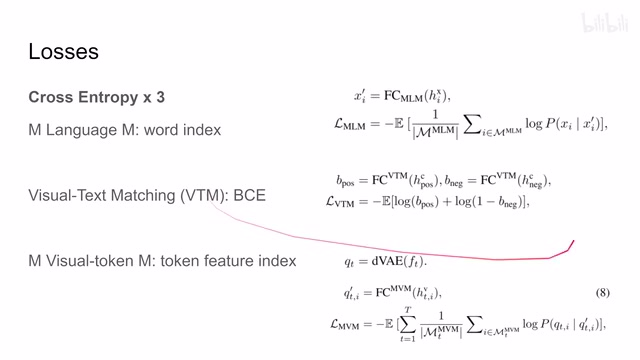
00:06:08–00:06:09 · 画面 02700:06:09–00:06:10 · 画面 028
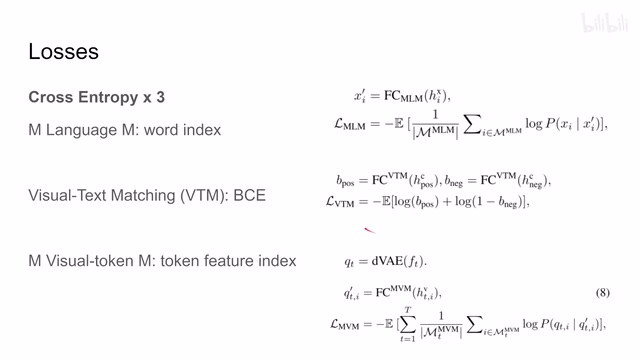
00:06:09–00:06:10 · 画面 02800:06:10–00:07:15 · 画面 029
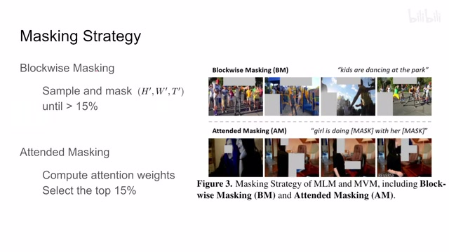
00:06:10–00:07:15 · 画面 029高宽和这个时序的，也就是说，我不是每一帧随便选，是说我选定了一个块之后，它后面的后续的几帧都要在这个位置上给它 mask 掉。那么就每次这么 mask 一个，每次这么 mask 一颗，重复直到大于 15%的这个 token 被 mask 掉了。那么这个呢是 blockwise masking。那么还有第二种呢是 attended 的这个 masking，这个就比较有意思了。首先呢，我们把原始的这个 video 这个 language 送到我们的模型里面。
先给你这个模型看一面，好看吗？对吧，对哪个感兴趣对不对？我们计算一下这个 attention 这个 matrix，看看这个模型对哪个地方有 attention，好看是吧？下课不给你看了好吗？这这么坏呢，就是我们选择前 15%的最受这个模型关注的这些 patch，然后我们把它们来 master。这个是一个很有意思的一个策略。那么后面我们就可以来看到作者汇报的一些结果，首先是这个 v6 retrieval。
00:07:15–00:07:32 · 画面 030
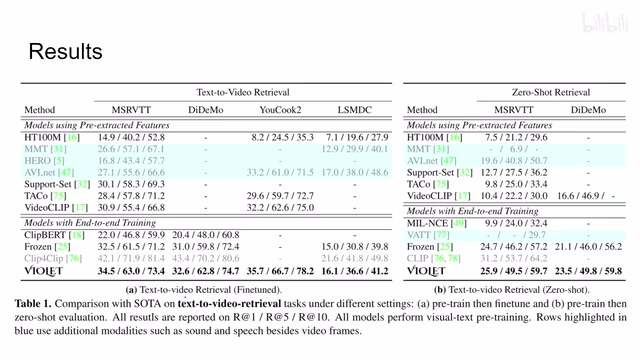
00:07:15–00:07:32 · 画面 030包括 fine-tune 和 ZeroShot 这些一些漂亮的数字，像这些有高亮背景的这些表示它用了这些其他的模态，像语音声音这些东西，所以并不能直接的比较。那么再往下来，第二个任务是这个 video question answering，根据我们的视频的内容来回答问题，这个取得了一个不错的性能。当然为什么把它变灰了，可以看到因为它实在是太消耗资源了。
00:07:32–00:07:39 · 画面 031
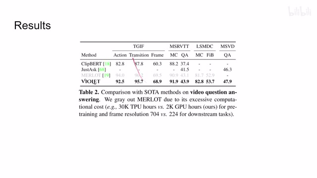
00:07:32–00:07:39 · 画面 03100:07:39–00:07:48 · 画面 032
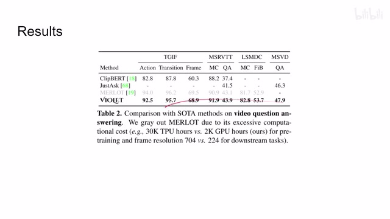
00:07:39–00:07:48 · 画面 032那么再往下呢就是一些有趣的 ablation，比如说这个 temporal modeling methods，就是对于一个视频来说，你怎么样把很多帧的这个信息给它融合到一起啊？是把每一帧的 feature 啊求平均值啊换起来，还是当一个 token 来使啊？对吧？然后这边呢是不同的这个 encoder 的这个配置，可以看到它的性能的表现。那么这边呢是通过不同的 fusion 里啊得到了结果的这个一个对比。
00:07:48–00:08:14 · 画面 033
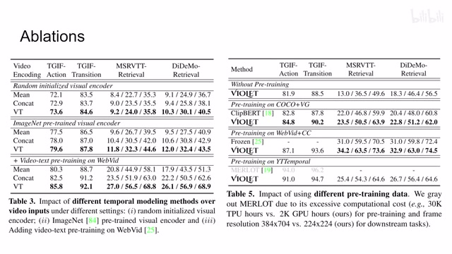
00:07:48–00:08:14 · 画面 03300:08:14–00:09:08 · 画面 034
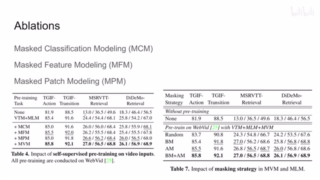
00:08:14–00:09:08 · 画面 034那么再往下，因为本文的标题探讨的是 mask video modeling，也就是我的 video 应该怎么 mask 合适，所以也可以看到这里对比了 mask classification modeling、feature modeling，就是预测一个 feature，还有 patch modeling，有点像 nce 的这一个东西。那么这里可以看到本文的这种 video 的 modeling 方法是最好的，这边还有 masking strategy，对吧？两个一起用效果最好。那么此外，苏哲还在文中汇报了详细的实验和分析
感兴趣的朋友呢，非常推荐你去原文来查看。那总的来说呢，这一篇还是一个不太意外的工作啊，是把这个 video 和我们的这个 language 拿到一起，同时呢，bert 这些东西最近很流行的对吧，拿过来这么一起搞这么一个事情。然后呢，实验也非常充足，很有意思的一个工作。好的，以上就是我对于这篇论文的一个简单的介绍。那么感谢您的收看，再见。
00:09:08–00:09:08 · 画面 035
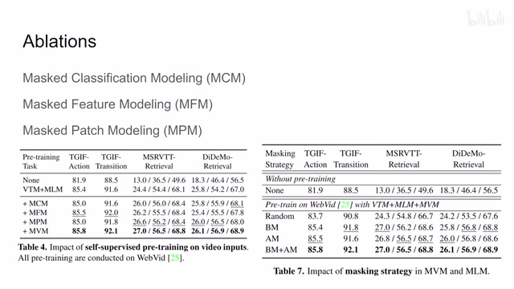
00:09:08–00:09:08 · 画面 035转写与来源说明 · 0 个自动复核提示
保留 20 个原始语音片段，0 个片段触发自动复核提示。提示仅用于定位可能的术语、重复或识别问题，不等于已确认错误。
讲解画面为源视频截图（640×360），不是可编辑 PPT 文件。全片按每秒 2 帧扫描内容变化，逐步展开页保留；连续动画保留代表画面。清晰度受源视频限制。
原视频：paper/合集_2026-10-16_多模态语言模型/[论文简析]End-to-End Video-Language Transformers..Masked Visual-token..[2111.12681].mp4
SHA-256：51cd6ea8f95f936a0591be3589a2491a0ed43895c3d66a18550a054053765145
全文按视频语音与画面制作。原论文可从上方链接下载；完整资料包保留全文、原始逐字稿、字幕和校对记录。